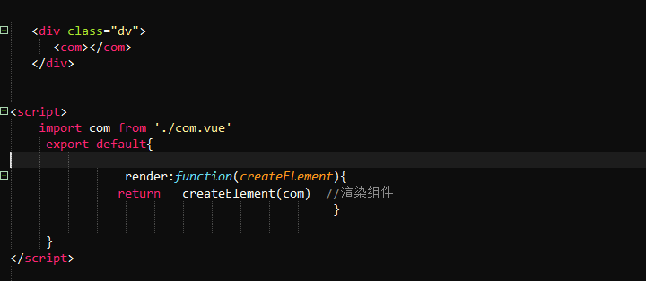
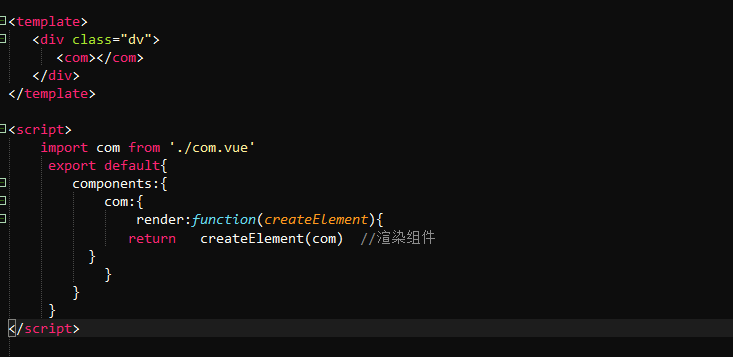
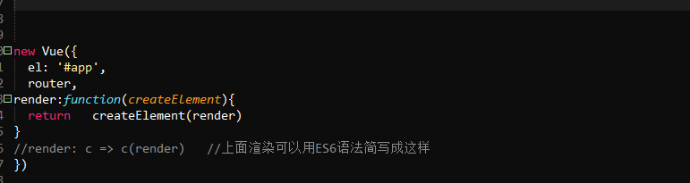

方式一、在组件中使用的时候，直接在vue实例方法中用，写在vue实例方法中（如果是根组件，则是new Vue()方法里，如果是其他组件，则就是在export default里面）,此时组件中不能写template标签，否则render不运行，因为render就是代替templte 如下图：，

方式二：如果组件一定有template,则render方法需要写在vue实例化的components选项中子组件的配置中,如下图：

在根组件中：
